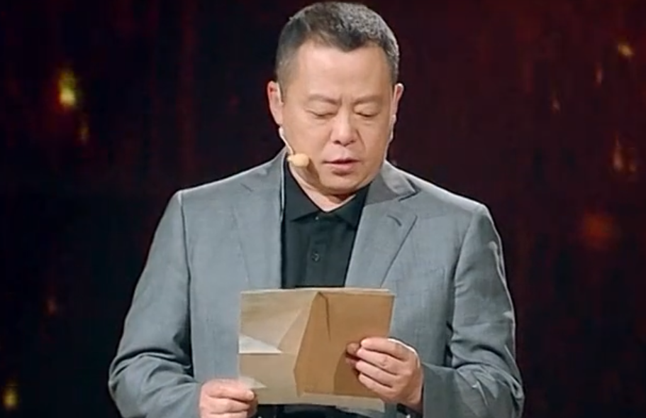

梦之队
关于我们
登录
首页
工农武装
红色读本
耀邦陵园
新中国
成立简史
1921年中国共产党成立，到1949年新中国成立.
新中国成立简史
1921 年 7 月 23 日
中国共产党第一次全国代表大会在上海举行。参加会议的各地代表有：李达、李汉俊、张国焘、刘仁静、毛泽东、何叔衡、王尽美、邓恩铭、陈潭秋、董必武、周佛海、陈公博，包惠僧受陈独秀派遣参加了会议。他们代表着全国５０多名党员。共产国际代表马林和尼科尔斯基列席了会议。在会议进行过程中，突然有法租界巡捕闯进了会场，会议被迫中断。于是，最后一天的会议，便转到了浙江嘉兴南湖的一艘游艇上举行。经过讨论，大会通过了中国共产党的第一个纲领和决议，并选举产生党的领导机构——中央局。 党的一大宣告了中国共产党的正式成立。
1923 年 —— 1927 年
国共第一次合作，国民革命。1924年至1927年中国人民在中国共产党和中国国民党合作领导下进行的反帝反封建的革命斗争。中国国民党进行东征和南征，平定了反革命叛乱，推动革命迅速发展。为推翻帝国主义和封建军阀在中国的统治，夺取革命在全国的胜利，1926年夏，国共两党决定实行北伐，以武力打倒祸国殃民的封建军阀。 国共合作实现后，工农运动得到迅速恢复与发展，尤其是随着北伐战争的胜利，工农运动更是不断高涨和深入。九江、汉口英租界的收回，上海工人阶级的三次武装起义，以及各省市工会组织与会员的大幅度增加，都充分显示出了工人阶级的巨大力量。
1927 年 —— 1933 年
工农武装割据，毛泽东思想诞生。1927年8月1日，中国共产党领导部分国民革命军在江西省南昌市举行的武装起义。由于客观上敌人力量过于强大，加上主观指导缺少经验等一系列原因，最后遭至失败。随后发起的秋收起义，毛泽东从实际情况出发，及时率领工农革命军向国民党统治薄弱的农村进军，走上了在农村开展游击战争。在工农起义过程中，“工农武装割据”的思想随之提出。它是指在中国共产党领导下，以武装斗争为主要形式，以土地革命为中心内容，以农村革命根据地为战略阵地的三者密切结合。而农村包围城市，武装夺取政权理论的形成也标志着毛泽东思想的诞生。
1934 年 10月 —— 1936年 10 月
红军长征，遵义会议确认毛泽东同志为领导。1934年10月，由于“左”倾冒险路线的错误领导，红军第五次反“围剿”失败，中央革命军事委员会发布命令，主力红军组成野战军，开始进行战略转移，随后拉开了万里长征的序幕。1935年1月召开的遵义会议，纠正了博古、王明、李德等人“左”倾领导在军事指挥上的错误，并确立了以毛泽东为代表的新的中央的正确领导。中央红军悲壮地踏上了二万五千里的漫漫长征路。他们克服了种种艰难险阻，同敌人进行了大大小小无数次战斗，爬雪山，过草地，付出了巨大牺牲。终于在1936年10月，三大主力红军在甘肃会宁胜利会师，红军长征宣告胜利结束。
1937 年 —— 1945 年
抗日战争，国共第二次合作，《论持久战》，《新民主主义论》标志着毛泽东思想的成熟。1937年7月7日，日军在北平附近挑起七七事变，中日战争全面爆发。在1937年7月23日，国共合作宣言和蒋介石谈话的发表，标志着国共两党第二次合作的正式形成。至1945年9月2日，长达8年的抗战结束。在此期间，毛泽东撰写了《论持久战》并形成了新民主主义革命理论的完整体系;总结出了党领导新民主主义革命的的三大法宝;实现了毛泽东哲学思想体系的构建等。中国人民抗日战争，是中华民族历史上最伟大的卫国战争，也是中国近代以来抗击外敌入侵第一次取得完全胜利的民族解放战争。
1945 年 —— 1949 年
解放战争，七大确立以毛泽东思想为指导，新中国成立！中国共产党第七次全国代表大会于1945年4月23日至6月11日在延安杨家岭中央大礼堂举行，确立毛泽东思想为党的指导思想并写入党章。1946中国人民解放军在中国共产党的领导下，为推翻国民党统治、解放全中国而进行的战争，这是一场事关中国前途命运的决战。1947年7月，解放军由战略防御转入战略进攻，接着连续进行了辽沈、淮海、平津三大战役，基本上消灭了国民党军主力。1949年4月，解放军横渡长江，解放南京，基本宣告了国民党统治的覆灭。1949年10月1日，在解放军向全国进军途中，中华人民共和国在北京宣告成立。
跨越时空的回信
选集
用传承的信仰，致敬先烈
第三季第一期 印记
第三季第二期 壮志
第三季第三期 出发
第三季第四期 风华
（ 所有视频均来自于江西网络广播电视台 ）
跨越时空的对话
熊克明的回信
杨千新的回信
郭锋的回信